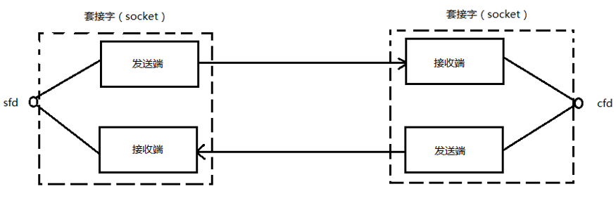
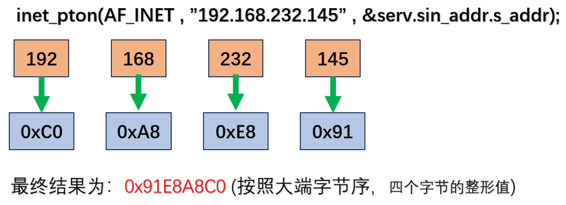

# Linux 网络编程
# 1.socket 编程
socket 是一种通信机制，用于在网络中不同计算机之间进行数据传输，当然也可用用于进程间通信。在 linux 中，有文件描述符这么个东西，我们可以通过 socket 函数创建一个网络连接，socket 的返回值为一个文件描述符，我们拿到这个文件描述符就可以像操作普通 io 文件那样来操作函数传输数据。
调用 socket 函数时，会创建两个缓冲区，与管道不同的时 socket 使用一个文件描述符来管理两个缓冲区。

# 1.1 socket 编程的基础知识
网络字节序：
- 大端 (网络字节序)：低位地址存放高位数据，高位地址存放低位数据。
- 小端 (主机字节序)：低位地址存放低位数据，高位地址存放高位数据。
在实际的开发中，我们需要进行大小端的转换，下面是大小端的转换函数：
头文件：#include <arpa/inet.h>
小端转大端：uint32_t htonl(uint32_t hostlong) 用于32位无符号整数小端到大端的转换(主机-\>网络)。
小端转大端：uint16_t htons(uint16_t hostshort) 用于16位无符号整数小端到大端的转换(主机-\>网络)。
大端转小端：uint32_t ntohl(uint32_t netlong) 用于32位无符号整数大端到小端的转换(网络-\>主机)。
大端转小端：uint16_t ntohs(uint16_t netshort) 用于16位无符号整数大端到小端的转换(网络-\>主机)。
IP 地址转换函数：
头文件：#include <arpa/inet.h>
函数原型： int inet_pton(int af, const char *src, void *dst);
函数功能：将字符串形式的点分十进制的 IP 地址转换为 16 进制数。
函数参数：
af：填 AF_INET 代表转 ipv4，填 AF_INET6 代表转 ipv6
src：字符串形式的点分十进制的 IP 地址。
dst：存放转换后的变量地址。
函数返回值：成功返回 1，失败返回 0，发生错误返回 - 1。

函数原型： const char *inet_ntop(int af, const void *src, char *dst, socklen_t size);
函数功能：将网络 IP 地址转换为字符串形式的点分十进制的 IP。
函数参数：
af：填 AF_INET 代表转 ipv4，填 AF_INET6 代表转 ipv6
src：网络 IP 地址。
dst：存放转换后的字符串形式的 ip 地址。
size：填 dst 的长度。
函数返回值：成功返回指向 dst 的指针，失败返回 NULL。
socket 编程中一些的重要结构体：
结构体 struct sockaddr 的成员变量的说明：
unsigned short sa_family：表示地址组，填 AF_INET 表示使用 ipv4，填 AF_INET6 表示使用 ipv6.
char sa_data[14]：用来存储具体的地址数据。
结构体 struct sockaddr_in 的成员变量的说明：
short sin_family：表示地址组，填 AF_INET 表示使用 ipv4，填 AF_INET6 表示使用 ipv6.
unsigned short sin_port：表示端口号，使用网络字节序 (大端序)。
struct in_addr sin_addr：表示 ipv4 地址，是一个结构体，用来存储 32 位的 ipv4 地址。
char sin_zero[8]：填充字段，一般设置为 0。
memset 函数：
函数原型： void *memset(void *ptr, int value, size_t num);
函数功能：用于将一段内存块中的内容设置为指定的值。
函数参数：
ptr：指向要设置值的内存块指针。
value：要设置的值，以整型形式传入。
num：要设置的字节数。
函数返回值：返回一个指向 ptr 指针。
# 1.2 socket 编程的主要函数：
socket 编程需要包含以下头文件：
- #include <sys/types.h>
- #include <sys/socket.h>
# 1.2.1 socket 函数
函数原型： int socket(int domain, int type, int protocol);
函数功能：创建 socket。
函数参数：
domain：协议版本。
- AF_INET 使用 IPV4
- AF_INET6 使用 IPV6
- AF_UNIX AF_LOCAL 使用本地套接字使用
type：协议类型。
- SOCK_STREAM 流式，默认使用的协议是 TCP 协议
- SOCK_DGRAM 报式，默认使用的是 UDP 协议
protocal：一般填 0，表示使用对应的默认协议。
函数返回值：成功返回一个大于 0 的文件描述符，失败返回 - 1。
调用成功以后，会返回一个文件描述符，内核会提供与该文件描述符对应读和写的缓冲区，还有两个队列，分别是请求链接队列和已链接队列。
# 1.2.2 bind 函数
函数原型： int bind(int sockfd, const struct sockaddr *addr, socklen_t addrlen);
函数功能：将文件描述符和 IP，端口号绑定到一个套接字。
函数参数：
sockfd：要绑定的套接字的文件描述符，就是 socket 返回的那个。
addr：指向要绑定的本地地址结构体的指针。
addrlen：表示本地结构体的长度，使用 sizeof (struct sockaddr) 来获取。
函数返回值：成功返回 0，失败返回 - 1。
# 1.2.3 listen 函数
函数原型： int listen(int sockfd, int backlog);
函数功能：将套接字由主动状态转变为被动监听状态。
函数参数：
sockfd：要将那个套接字转变为监听态。
backlog：同时请求的最大个数 (表示等待队列的最大长度)。
函数返回值：成功返回 0，失败返回 - 1。
# 1.2.4 accept 函数
函数原型： int accept(int sockfd, struct sockaddr *addr, socklen_t *addrlen);
函数功能：接受传入的请求，并且新建一个新的套接字，用于与客户端之间进行通信。没有链接会阻塞。
函数参数：
sockfd：表示监听套接字的文件描述符。
addr：是一个指针，用于存储客户端的地址信息。
addrlen：用于指定 addr 的长度。
函数返回值：成功返回一个新的套接字，用于与客户端进行通信。失败返回 - 1。
accept 函数是一个阻塞函数，若没有新的连接请求，则一直阻塞.
从已连接队列中获取一个新的连接，并获得一个新的文件描述符，该文件描述符用于和客户端通信. (内 核会负责将请求队列中的连接拿到已连接队列中)
# 1.2.5 connect 函数
函数原型： int connect(int sockfd, const struct sockaddr *addr, socklen_t addrlen);
函数功能：连接服务器。
函数参数：
sockfd：调用 socket 返回的文件描述符。
addr：服务端的地址信息。
addrlen：addr 变量的内存大小。
函数返回值：成功 fanhui0，失败返回 - 1。
接下来就可以使用 write 和 read 函数进行读写操作了，当然还可以使用 recvhesend 函数。但是使用时不 要混着使用，要么读写都用 write 和 read 或 recv 和 send，不要混着用。
# 1.2.6 send 函数
函数原型： ssize_t send(int sockfd, const void *buf, size_t len, int flags);
函数功能：将数据从已连接的套接字发送给对方。
函数参数：
sockfd：表示已建立链接的套接字描述符。
buf：指向要发送数据的缓冲区指针。
len：要发送数据的长度。
flags：标志参数，一般填 0；
函数返回值：成功会返回刚才发送的字节数，失败会返回 - 1。
# 1.2.7 recv 函数
函数原型： ssize_t recv(int sockfd, void *buf, size_t len, int flge);
函数功能：从已连接的套接字中接收数据。
函数参数：
sockfd：已连接的套接字描述符。
buf：用于存放接收的数据。
len：存放数据容器的长度。
flags：参数标志，一般填 0。
函数返回值：成功返回接收的字节数，失败返回 - 1。
# 1.3 使用 socketAPI 函数编写服务端和客户端的程序
# 1.3.1 服务端程序步骤：
- 第一步创建套接字：使用 socket 函数创建一个套接字，同时指定地址族，套接字类型和协议。
- 第二步绑定地址：使用 bind 函数将套接字绑定到一个本地地址，同时指定监听的端口号和 ip 地址。
- 第三步设置监听：使用 listen 函数将套接字设置为被动监听状态，指定同时等待处理的链接请求数量。
- 第四步接受连接：使用 accept 函数接受传入的连接请求，并且 accept 会创建一个新的套接字用于与客户端通信。
- 第五步与客户端通信：通过 accept 给出的套接字与客户端通信，可以使用 send 和 recv 或 read 和 write 函数发送和接收数据。
- 第六步关闭套接字：当通信结束后，使用 close () 函数关闭给出 accept 和 socket 两个函数给出的套接字。
# 1.3.2 客户端程序步骤：
- 第一步创建套接字：使用 socket 函数创建一个套接字，同时指定地址族，套接字类型和协议。
- 第二步连接服务器：使用 connect 函数连接到服务端地址，同时指定服务端的 IP 地址和端口号。
- 第三步与服务端通信：连接成功后，可以使用 send 和 recv 或 read 和 write 函数与服务端交换数据。
- 第四步关闭套接字：当通信结束后，使用 close 关闭刚才 socket 的套接字。